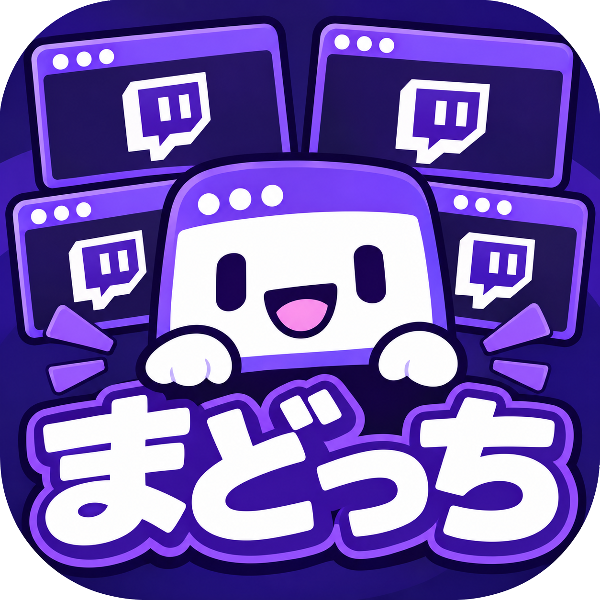

任意の配信者のTwitchID、もしくはTwitchのURLを以下に入力（右側のボタンはショートカット機能）

ver:2.1.5
・ページ読み込みの際、最後に表示していた配信を表示するように修正
ver:2.1.6
・アイコン・背景画像を設定
ver:2.1.7
・アクセスカウンターを追加
ver:2.1.8
・ウィンドウサイズに応じて窓枠のサイズを変更するように対応
ver:2.1.9
・ウィンドウサイズを変更できるスプリッターを追加
ver:2.2.0
・画面読み込み時にプレイヤーが最小のサイズで表示される不具合を修正
・スプリッターのドラッグ操作を滑らかに行えるように修正
ver:2.2.1
・画面数を切り替えるボタン機能を追加
ver:2.2.2
・コメント欄開閉ボタンの配置を各配信画面の中央へ変更
・配信画面にカーソルがあるときのみボタンを表示するように対応
ver:2.2.3
・4窓に対応
・シアターモード（不要なUIを非表示に）
・音声出力先の変更（窓ごとに出力先を変えるのはさすがに厳しい？）
・ショートカットキー登録中の配信者の配信中表示（難易度高）
・レイアウトサイズや配置をいい感じに調整できるように
・コメントの弾幕表示